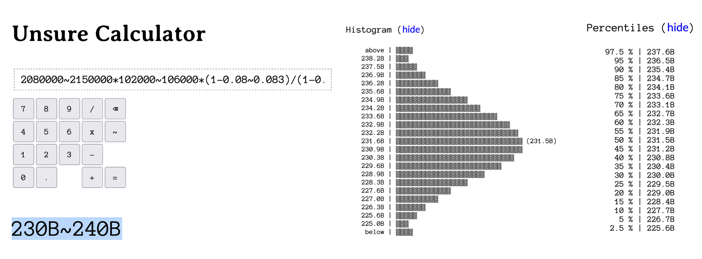

This is an early version of an uncertainty calculator.
Statistics are scary, but they don't need to be. If you allow me to simplify, the field of statistics is just saying: I'm not certain about these numbers, but I would still like to reason about them. Turns out we're unsure about a lot in our lives, but we can't just throw our arms in the air and say, well, I'm not a statistician.
The idea is simple: apart from regular numbers (like 4, 3.14 or 43942), you can also input ranges (like 4~6, 3.1~3.2 or 40000~45000). The character between the two extremes of the range is a tilde (~), a little wave symbol. You can find it on most keyboards, but for convenience, I also included it in the keypad above.
The range notation says the following to the calculator: I am not sure about the exact number here, but I am 95% sure it's somewhere in this range.
That's it. I thought long and hard about this, and I got to the conclusion that simplicity is key. Yes, we could have notations for different probability distributions, for different confidence levels, for truncations, for covariance, and so on. But that would also make it harder to understand. My assumption is that, if you're already cozy enough with things like confidence levels, you'll want to use something more sophisticated anyway. Here, we're interested in unlocking the power of statistics to a broad audience.
Reading the notation is easy: when you see 10~15, you say: "ten to fifteen".
People short-circuit when they encounter uncertainty. "Well, this is not certain, but that other thing also isn't, so it doesn't matter."
It often does!
"Well, I don't know this number exactly, so I'll just pick the first number that seems plausible and calculate with that."
Please don't! Our brains like the simplicity of single numbers, simple answers, but it's a trap. See below.
Say you are an eCommerce Company and you want to estimate the GMV of a business line. There are 2 business lines A and B. And GMV is calculated by the formula below
GMV of A= [# of Customers * Spend/Customer * (1 - Share of Business Line B)]/(1 - Discount Rate)
Now you could make a rough estimate that you will have 2.05M customers, each of them will spend 104K KRW, and business line 2 will have a share of 8.15% and you will provide discounts for 13%.
2050000*104000*(1-0.08)/(1-0.13) = 225B
But how confident are you that you will make a GMV of 225B? You wouldn't know the confidence interval
But say for each of the terms you have a 95% confidence interval range for example: you at 95% sure you will get roughly 2.08M to 2.15M customers a month, and the customers spend anywhere from 102k KRW to 106k KRW per month. And customers spend 8% to 8.3% on the business line B. And you provide discounts in the range of 12.3% to 13.2%.
The values in our little formula that are actually ranges. I'm not sure about the exact value, but I am pretty sure about the general range into which each value will fall.
Let's do the calculation with ranges:
2080000~2150000*102000~106000*(1-0.08~0.083)/(1-0.123~0.132) = 230B~240B
Now, I am 95% sure the real value of each item falls into the range. That means I am also 95% sure the real balance will fall into the 230B to 240B KRW range. This is much more helpful than the one number.
I also have the probability distribution and the percentiles.

The percentiles tell me that there's a 10% chance that our monthly GMV will be 227.7B or lower. Conversely, 90% of the outcomes will be higher than 235.4B. Now, I can make a better informed decision.
Here are some ideas of how to use this calculator and its notation.
50000~80000 x 0.10~0.20 x 5~10 - 20000~500001000~1500 x 10~12 x (30~50 / 100)(3~5 * 5~10 * 51 * 7~15) / 60 - 10~155000 x (-2~5 / 100) x 5~10(10~30 / 100) * (0.1~1.0 / 100) * 100100 x tan(70 ~ 80)1000000 x (2~3 / 100) x (3~5 / 100) x (10~15)In the keypad above, you will only find +, -, x and /. But the calculator supports more than that, even in this early stage. You can calculate 2~3 ^ 4 (two to three, to the power of four), sqrt(10~12) (square root of ten to twelve) or sin(90~95) (sine of ninety to ninety five degrees).
This is a one man show. You should expect breakages. The formula parser is brittle and gives unhelpful error messages.
The computation is quite slow. In order to stay as flexible as possible, I'm using the Monte Carlo method. Which means the calculator is running about 250K AST-based computations for every calculation you put forth.
The UI is ugly, to say the least.
The only way to share formulas is to manually construct a URL. For example, sending someone to https://www.gapp.in/unsure/#f=https://www.gapp.in/unsure/#f=2080000~2150000*102000~106000*(1-0.08~0.083)/(1-0.123~0.132) will auto-compute 230B~240B for them.
Range is always a normal distribution, with the lower number being two standard deviations below the mean, and the upper number two standard deviations above. Nothing fancier is possible, in terms of input probability distributions.
And of course, this is not a statistician's tool. Use the Unsure Calculator for back-of-a-napkin calculations. For anything more involved, use one of the free or paid statistical tools, a full programming environment, or hire a statistician.
I hope some people will find this tool useful, despite the limitations and despite its spartan design.